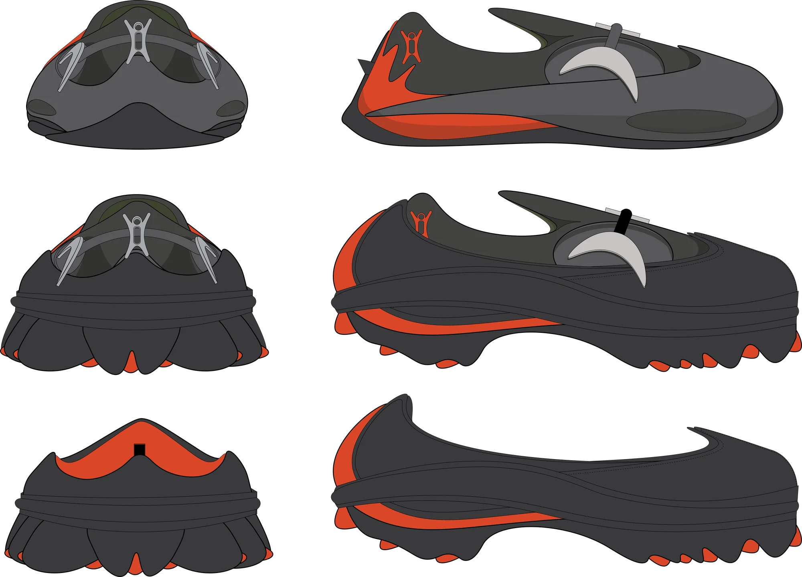
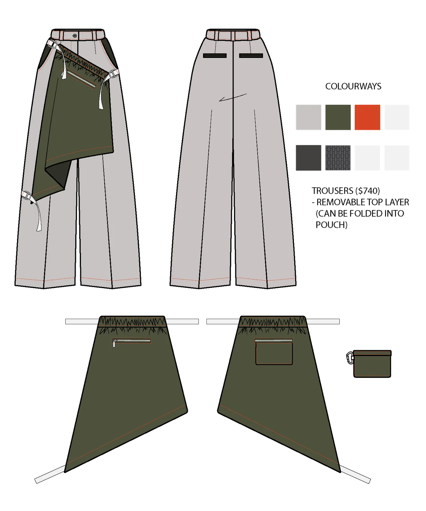
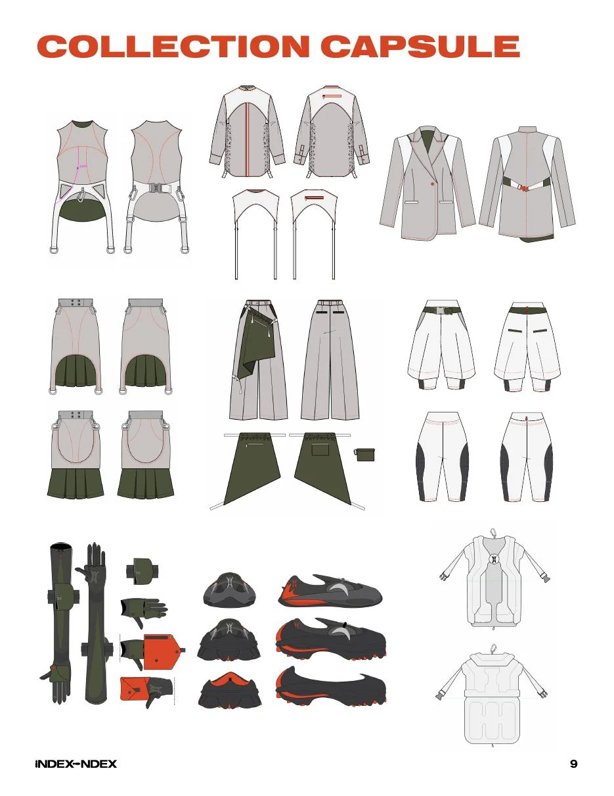
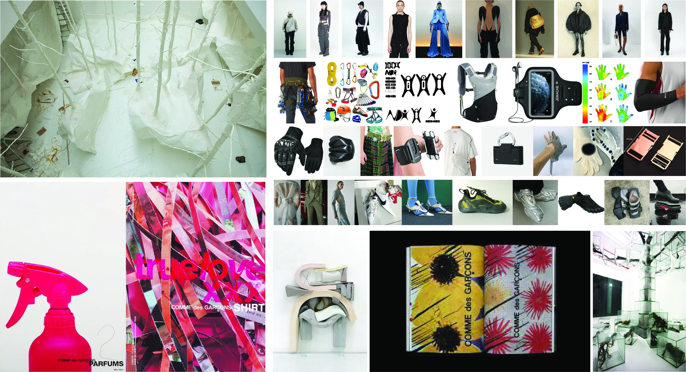
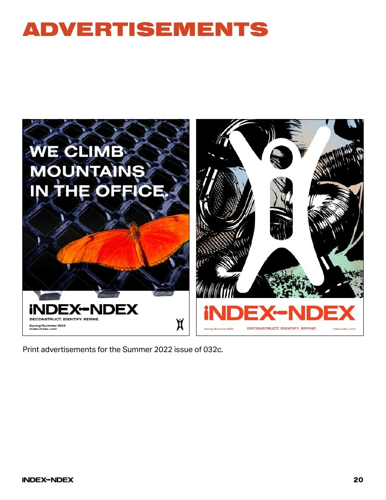
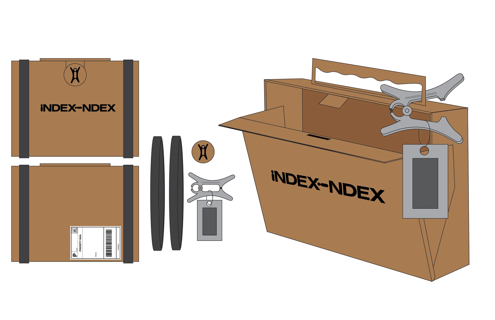

Reference A / office
Restraint
Tailoring, clean lines, repeated codes, professional dress, controlled movement.
Industrial athleticism

A genderless fashion concept merging tailored office dress with equipment for running, hiking, and movement.
Index controls
Project-specific interaction trial
01 / Premise
Reference A / office
Tailoring, clean lines, repeated codes, professional dress, controlled movement.
Reference B / trail
Fasteners, modular layers, body mapping, equipment, outdoor movement.
INDEX INDEX presents two different sets of elements as one uniform system.
The project identifies a shared history between office attire and sportswear: both are designed to eliminate excessive motion, yet both can restrict the body in different ways. The collection works inside that contradiction, using adjustability and dual function as the point of fusion.
Designed for a sustainably conscious, fashion-current audience aged 20–30 whose lives move between professional dress codes and outdoor exploration. Individual pieces are intended to enter an existing wardrobe fluidly rather than demand a complete uniform.
Source: INDEX INDEX target-market document / 2021
02 / Garment index
Select a garment above. The index rebuilds around its technical drawing, price, function, and transformation.

Lower body / modular
$740 CAD
Transform / 01
A removable asymmetric top layer folds into its own pouch, shifting the trouser between tailored uniform and portable equipment.

The capsule behaves less like a lineup and more like a kit of parts.
03 / Method
Break office attire and athleticwear into construction, hardware, silhouette, movement, and social code.
Evidence / tailoring + equipment
Find the point where each category responds to the body: containment, protection, adjustment, and efficiency.
Commonality / controlled motion
Resolve the collision as a garment that transforms, detaches, folds, stores, or adjusts without abandoning a precise silhouette.
Outcome / one object, two states
Material
Deadstock, vintage, or recycled textiles; no virgin resources.
Production
Limited runs, local partnerships, mendable construction.
Use
Multiple functions and more than one way to wear.
Traceability
Visible supply chains and no greenwashing.
04 / Visual world


05 / Outcome

The last transformation happens after the garment leaves the studio.
A recyclable cardboard shipper is secured with reusable rubber bands and reorganized into a briefcase. One package replaces the polybag, shipping bag, and secondary box while extending the office/outdoor duality into the customer experience.
A portfolio case study organized as an index: premise, reference, mechanism, object, system, outcome.